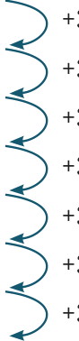
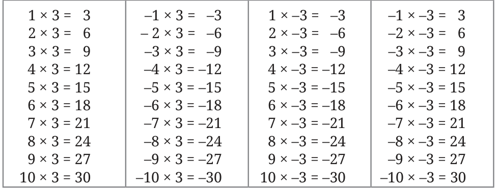

We have explored the multiplication of integers in cases where the multiplier is positive, when it is negative, when the multiplicand is positive and when it is negative. Using this understanding, let us construct a sequence of multiplications and observe the patterns.
What do you notice in this pattern? Can you describe it?
We can see that, when the multiplicand is positive, for every unit decrease in the multiplier the product decreases by the multiplicand.
Will this pattern continue when the multiplier goes below zero and becomes a negative number?
Yes indeed! The same pattern continues when the multiplier becomes a negative number.
What is the pattern when the multiplicand is a negative integer?
This is the inverse of the previous pattern. When the multiplicand is negative, for every unit decrease of the multiplier, the product increases by the multiplicand.
Will this pattern continue when the multiplier goes below zero and becomes a negative integer? Yes!
Even when the multiplier is negative, the same pattern is observed. When the multiplicand is negative, for every unit decrease in the multiplier, the product increases by the multiplicand.
We can see from these patterns that, what is true for multiplication when the integers are positive, is also true when the integers are negative.

With this understanding of multiplication of integers, let us look at the times 3 tables when the multipliers and multiplicands are positive, and when they are negative.

We observe the following:
- The magnitude of the product does not change with the change in the signs of the multiplier and the multiplicand.
- When both the multiplier and the multiplicand are positive, the product is positive.
- When both the multiplier and the multiplicand are negative, the product is positive.
- When one of the multiplier or the multiplicand is positive and the other is negative, their product is negative.